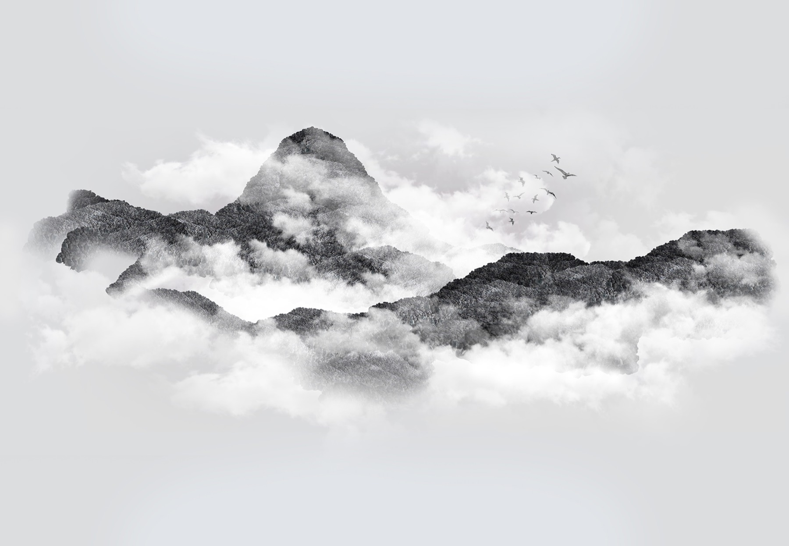

Interactive
Living Tree
Living Tree is an interactive work in which a digital tree responds to the presence and actions of its viewers. As the tree grows and transforms, butterflies move through the space, creating a shifting relationship between participant and environment.
I am interested in how artificial forms can begin to take on qualities we associate with living things. Neither fully natural nor entirely constructed, the work exists in a state of continual becoming. Through interaction, boundaries between observer and observed, action and response, become increasingly uncertain.
How to interact: move your cursor slowly across the piece and let it respond — small, unhurried movements shape it best, while quick motions disturb it. On a phone or tablet, drag gently with one finger. For the full experience, open it fullscreen above.
Interactive
Eternal Art
This interactive work explores the tension between permanence and change. A classical sculpture appears stable until the viewer approaches it. Through interaction, the image fragments and disperses, only to gradually restore itself once the interaction ceases.
I am interested in how forms that appear fixed reveal themselves to be temporary and contingent. Existing in a continual cycle of formation and dissolution, the sculpture reflects on the fragility of permanence and the shifting nature of the forms through which we experience the world.
My work explores the space between reality and representation — between what appears and what remains beyond immediate perception. Read the full statement →